Steps to load data from WCF RIA services to GridData control:
1. Create a new Silverlight application.
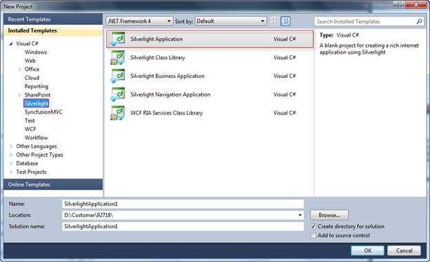
Figure 208: Creating a new Silverlight Application
2. Ensure that the Host the Silverlight application in a new Web site and the Enable WCF RIA Services check boxes are enabled.
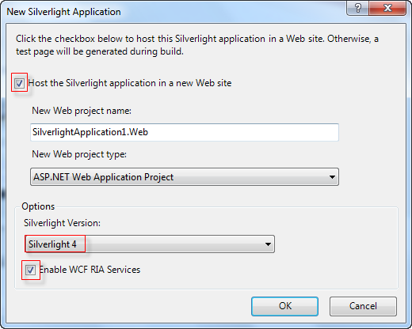
Figure 209: Enabling WCF RIA Services
3. Click OK. The created Silverlight application will appear under the Solution Explorer window.
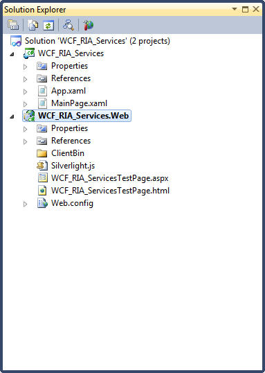
Figure 210: View of a new WCF RIA Service Silverlight application
4. Add the Syncfusion Grid assemblies under the References folder in the created Silverlight application.
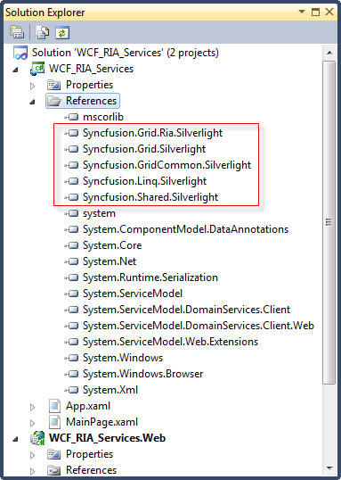
Figure 211: Adding the Syncfusion Grid Assemblies
5. Right-click on the created Silverlight application. The context menu will open.
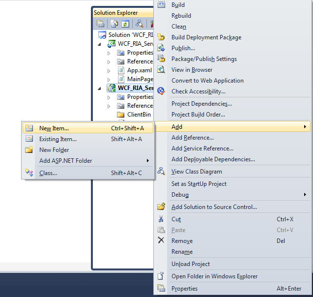
Figure 212: Adding new item to web project
6. Click Add and select New Item. The Add New Item window will open.
7. Select Data under Installed Templates, and then select ADO.NET Entity Data Model.
8. Enter a name for the data model in the Name field.
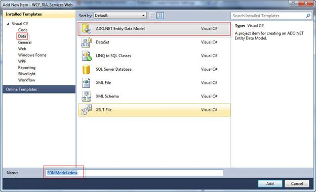
Figure 213: Adding an Entity Data Model
9. Click Add. The Entity DataModel Wizard window will open.
10. Select Generate from database under the What should the model contain? field.
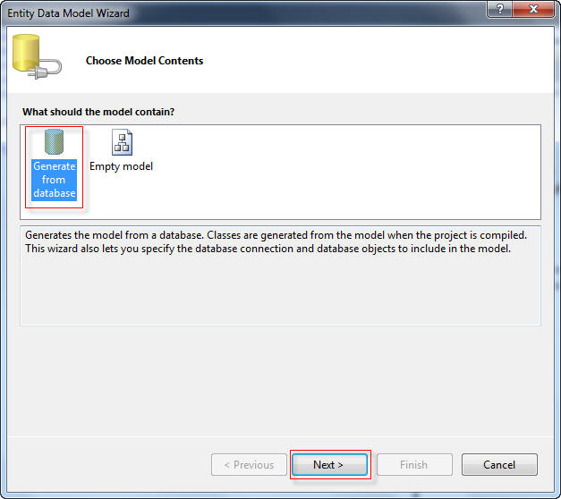
Figure 214: Entity Data Model Wizard
11. Click Next.
12. Select a data connection from the Which data connection should your application use to connect to the database? drop-down combo box or click New Connection to create a new data connection for the database.
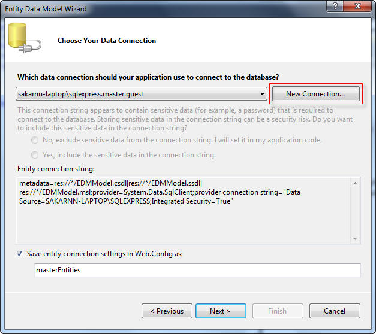
Figure 215: Creating a new connection String
The Connection Properties dialog will open if you click the New Connection.
13. Under the Connection Properties dialog box, select a server name from the Server name drop-down combo box and select a database name from the select or enter a database name drop-down combo box.
14. To check the connection, click Test Connection. The Test connection succeeded dialog will open if the connection is proper.
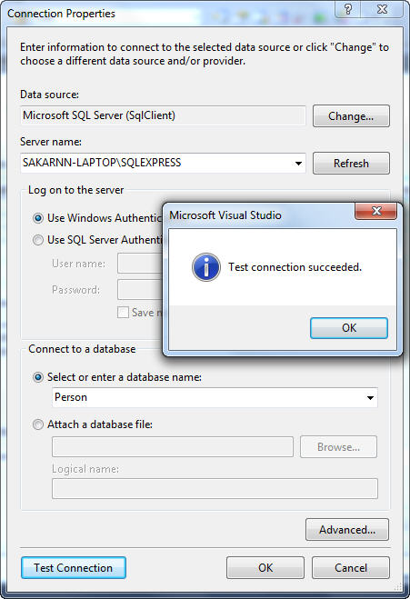
Figure 216: Connection Properties
15. Click OK.
16. On the Entity Data Model Wizard, select Save entity connection settings in Web.Config as check box and enter a name in the name field.
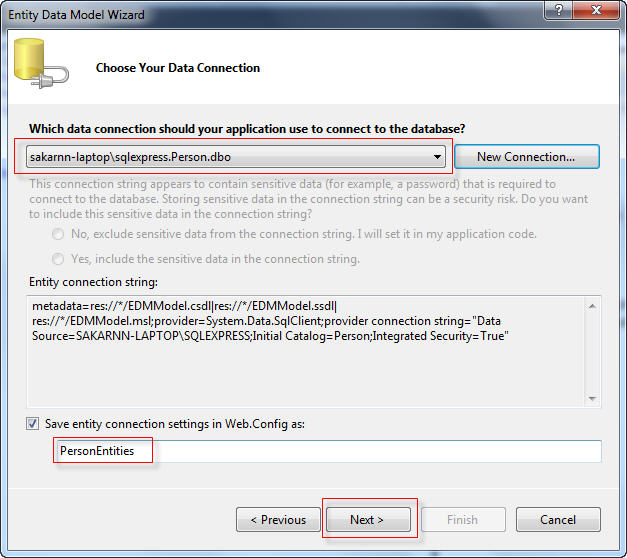
Figure 217: Connection String
17. Click Next.
18. Select Tables, and then select a required table in which the data to be added to the grid.
19. Enter a name in the Model Namespace field.
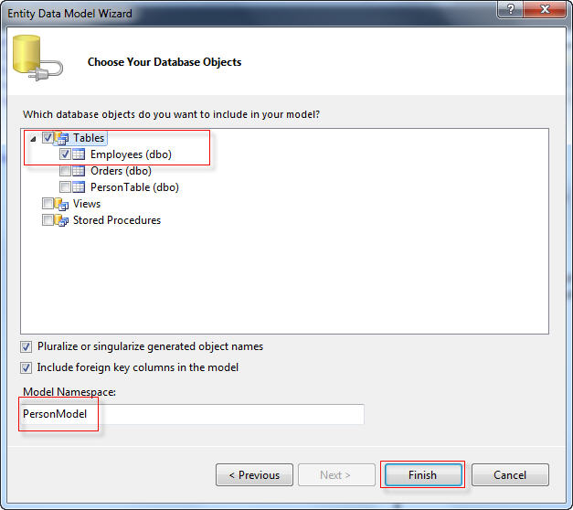
Figure 218: Choosing the Database objects
20. Click Finish. The Model Browser window will appear with the list of properties of the selected table.
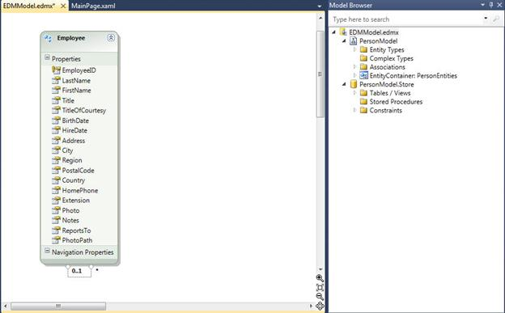
Figure 219: Properties of the Employee Table
21. Open the Add New Item window.
22. Click Silverlight and select Silverlight-enabled WCF Service.
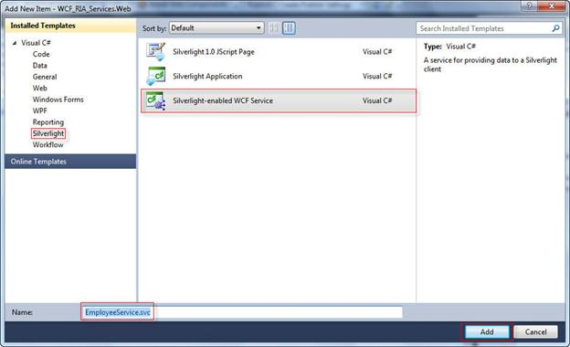
Figure 220: Adding a Silverlight enabled WCF Service
23. Enter a name for the WCF service application in the Name field, and then click Add. The Editor window will open.
24. To get the data from the PersonEntities class in the database, add the following code snipppet in the Editor window.
|
[C#]
public class EmployeeService { [OperationContract] public List<Employee> GetEmployees() { PersonEntities entity = new PersonEntities(); var result = from emp in entity.Employees select emp; return result.ToList(); } }
|
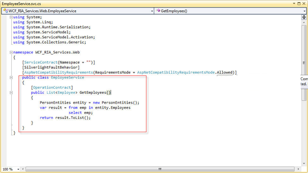
Figure 221: Editor Window with added code snippet
25. Save the application.
26. Open the Solution Explorer window.
27. Right-click on the created WCF service application. The context menu will open.
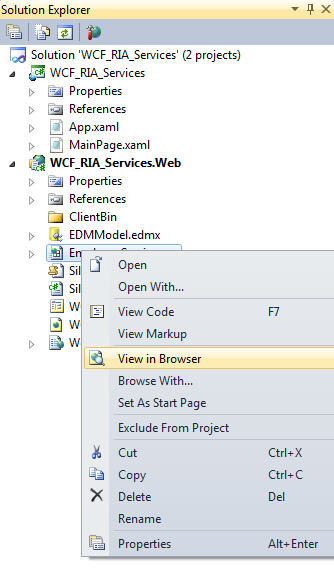
Figure 222: Viewing the service in the browser
28. Select View in Browser. The WCF service application will open in the default browser.
29. Copy the WSDL link.
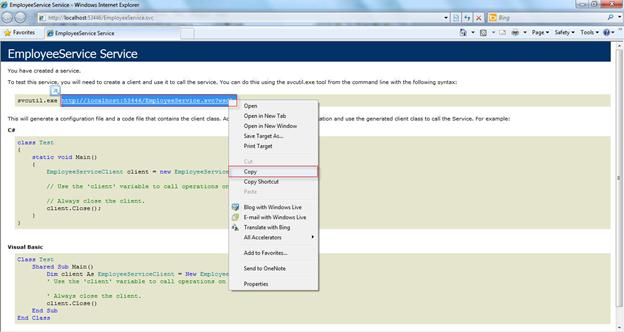
Figure 223: Wsdl link for the service
30. Open the Solution Explorer.
31. Right-click on the References folder.
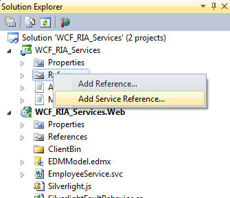
Figure 224: Adding the Service reference
32. Select Add Service Reference. The Add Service Reference window will open.
33. Paste the copied link in the Address field and click Go. It will display the available services in the Services field. The methods under the service will be displayed in the Operations field.
Note: You can browse the available services by clicking the Discover button.
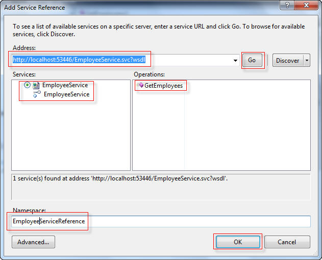
Figure 225: Getting the Service class and methods
34. Enter a name in the Namespace field, and then click OK. The created service reference will appear under the Service References folder.
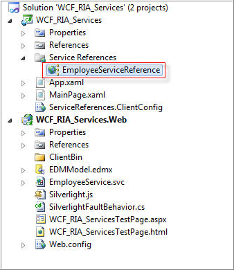
Figure 226: Added Service Reference
35. Add the following code in the MainPage.xaml and save the changes. You need to define the GridDataControl in the code snippet to display the data.
|
[XAML]
<Grid x:Name="LayoutRoot" Background="White"> <sync:GridDataControl x:Name="grid" VisualStyle="Metro" AutoPopulateColumns="False" AutoPopulateRelations="False" ShowAddNewRow="False" ColumnSizer="Star" > <sync:GridDataControl.VisibleColumns> sync:GridDataVisibleColumn MappingName="EmployeeID" HeaderText="EmployeeID" /> <sync:GridDataVisibleColumn MappingName="LastName" HeaderText="LastName" /> <sync:GridDataVisibleColumn MappingName="FirstName" HeaderText="FirstName" /> <sync:GridDataVisibleColumn MappingName="Title" HeaderText="Title" /> <sync:GridDataVisibleColumn MappingName="TitleOfCourtesy" HeaderText="TitleOfCourtesy" /> </sync:GridDataControl.VisibleColumns> </sync:GridDataControl> </Grid>
|
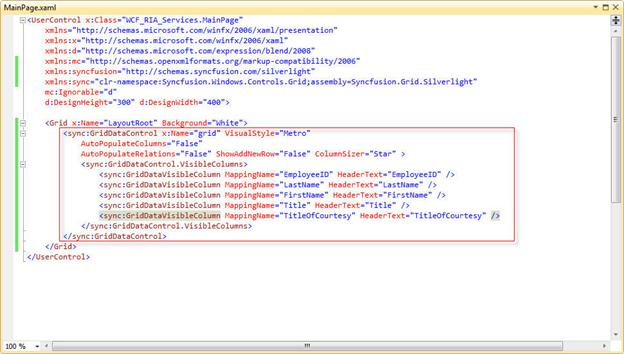
Figure 227: Defined GridDataControl
36. To assign the itemsource for the grid, add the following code snipppet in the MainPage.xaml.cs under the MainPage.xaml.
|
[C#]
public MainPage() { InitializeComponent(); EmployeeServiceReference.EmployeeServiceClient client = new EmployeeServiceReference.EmployeeServiceClient(); client.GetEmployeesCompleted += new EventHandler<EmployeeServiceReference.GetEmployeesCompletedEventArgs>(client _GetEmployeesCompleted); client.GetEmployeesAsync(); }
void client_GetEmployeesCompleted(object sender, EmployeeServiceReference.GetEmployeesCompletedEventArgs e) { grid.ItemsSource = e.Result.ToList(); }
|
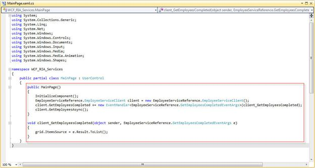
Figure 228: Grid with assigned Item source
37. Run the application. The GridData control will be loaded with data.
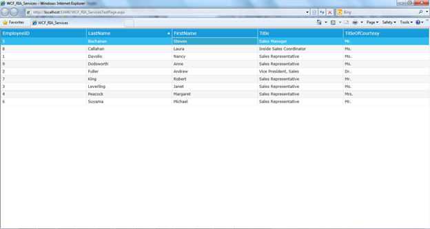
Figure 229: GridData Control with loaded data